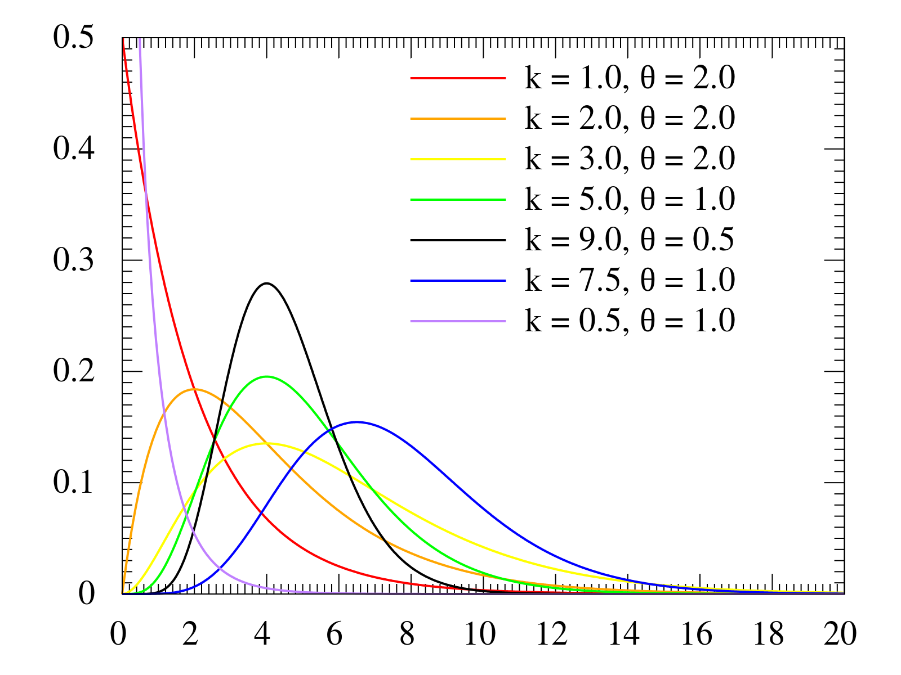

Gamma Distribution

- Notation
- $$X ∼ Gamma(r, \lambda)$$
- Interpretation
- Statistically, gamma distribution is the sum of multiple exponential distributions and exponential distribution is just a special case as $$Gamma(1, \lambda)$$.
- Type:
- Continuous
- Parameter(s):
- r - the shape parameter
- $$\lambda$$ - the scale parameters
- Probability Density Function:
- $$f(x)=\dfrac{1}{(r-1)! \lambda^r} e^{-x/\lambda} x^{r-1}$$
- Range:
- $$r \in (0, \infty)$$
- $$\lambda \in (0, \infty)$$
- $$x \in (0, \infty)$$
- Mean:
- $$E(X) = \frac{r}{\lambda}$$
- Variance:
- $$Var(X) = \frac{r}{\lambda}$$
Application:
- Gamma distribution can be used to analyze a generalized poisson process. In previous section, we introduce that the waiting time until the first event occurs follows an exponential distribution. Now, we can calculate the waiting time until the nthevents occur with gamma distribution.
The table below summarizes the relationship between discrete and continuous analogous distributions of poisson process.
| Counts of Events | Times between Events | Time until $$r^{th}$$Event | |-----------------------|:--------------------:|----------------------------| | $$Bin(n,p)$$ | $$Geom(p)$$ | $$NegBin(r, p)$$ | $$Poisson(\lambda t)$$ | $$Exp(\lambda)$$ | $$Gamma(r, \lambda)$$ |